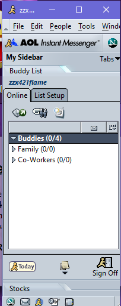
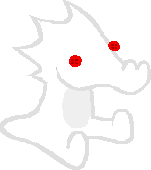
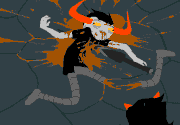

your local zzx website on netscape
7.2

made with netscape composer

aim on netscape works!
i love flash player but adobe fucked it up and shutting it down on this year but there's time
nothing ends quickly
now i have an surprise for homestuck fans!

pet me pls
i <3 u

*GASP* Vriska (shadow) your
goddamn murder!
i love old prorams inculding wlm, aim, yahoo and more!
--------------------------------------------------
links that lead to other pages:

click on the retrosite button to go to retrosite
do you want to make subsites like me? then click on the cube!

Frontpage version
?
i dunno what to put here so here what i can do
This is the juno buton click on it